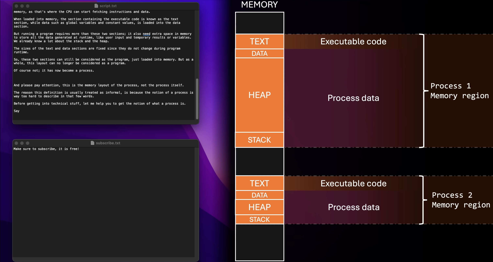
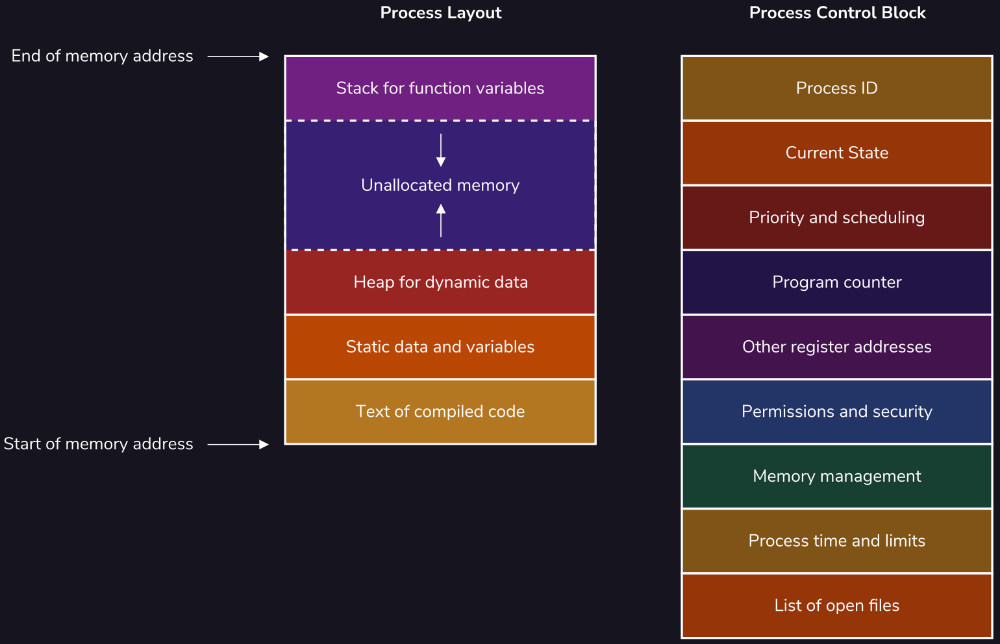

OS 操作系统原理
操作系统:
- 狭义: 内核
- 广义: 发行版
快捷参考表:
Unit # Bytes Hex 1 KB \(2^{10}\) B 0x00000400 4 KB \(2^{12}\) B 0x00001000 1 MB \(2^{20}\) B 0x00100000 128 MB \(2^{27}\) B 0x08000000 1 GB \(2^{30}\) B 0x40000000
基本概念
Process 进程
Program vs Process:
- Program: 理解为一段汇编程序加上一些用到的内存中的数据.
- 汇编程序和数据其实都在内存中, 其实从本质上来看无法将他们区分. 数据和指令是等价的.
- 也可以理解为一个 process 的 代码段 (
.text) 和 数据段 (.data).
- Process: A program in execution.
- 一个 Process 除了包含 Program 的内容, 还有在运行的时候动态增长的堆 (
heap) 和 栈 (stack). - 一个 Program (比如一个 C 编译出来的可执行文件) 可以被同时运行两次, 这时候就会有两个 Process, 只有他们的代码段部分是一样的, 但是数据段、堆和栈一般都不一样.
- Address Space: 每个 Process 都有自己独立的地址空间 (见 Figure fig-program-process 的红色区域).
- 一个 Process 除了包含 Program 的内容, 还有在运行的时候动态增长的堆 (

Figure 1: 相同 program (text editor) 被打开两次形成两个独立的 process [1]. - Program: 理解为一段汇编程序加上一些用到的内存中的数据.
Process Control Block (PCB): OS 用来管理 Process 的数据结构, 包含 Figure fig-process-layout 所示的信息.

Figure 2: 一个 Process 初始化后在内存中的结构 和给 OS 的 PCB. Context Switch 上下文切换
安全问题:
- 安全问题的实现需要两个前提:
- 必须软硬件协同完成 (不能单靠软件)
- OS 必须是可信任的.
- 硬件上有标志位来区分当前 CPU 运行在哪种 Mode 上 (Kernel / User).
- CPU 必须支持 Interrupt, 触发后 PC 自动跳到指定地址 (Interrupt routine), 并自动切换到 Kernel Mode.
- 这说明该地址的 program 有完全的权限来操作硬件.
- 所以该地址将不能允许被加载用户程序, 只能存放 OS 内核代码.
- 安全问题的实现需要两个前提:
Kernel (Privileged) Mode / User Mode
- 仅 Kernel Mode 能做的事情
- 执行 Privileged Instructions.
- 访问网卡、硬盘、显卡、键盘、操作 MMU (如果能操作 MMU 就相当于可以对整个 Physical Memory 进行操作了)
- 仅 Kernel Mode 能做的事情
System calls 系统调用
- 动机: User 程序显然需要以某种方式执行特权指令 (比如读写硬盘), OS 提供了一组 API (如
fork(),open(), etc.)
- 动机: User 程序显然需要以某种方式执行特权指令 (比如读写硬盘), OS 提供了一组 API (如
Process Schedule 进程调度

Figure 3: Multiple level queues 的 Process Scheduling 进程调度
References
[1]
J. Villalta, “Operating systems theory.” YouTube, 2024. Available: https://www.youtube.com/channel/UCGKEMK3s-ZPbjVOIuAV8clQ. [Accessed: Feb. 06, 2026]